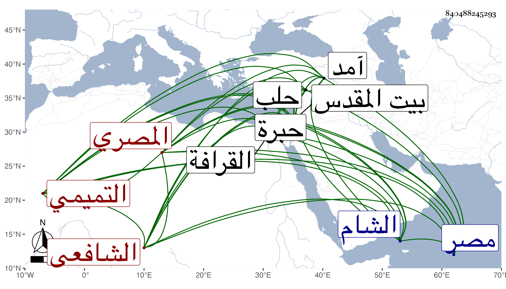

0902Sakhawi.DawLamic.ITO20230111-ara1.EIS1600.840488245293
Biography ID: 840488245293
133
محمد بن أحمد بن محمد بن عبد الرحمن بن محمد بن عمر بن عثمان بن أبي بكر ناصر الدين أبو الفضل بن البهاء أبي حامد بن الشمس التميمي المصري الشافعي والد أحمد ويعرف بابن المهندس . ولد كما قرأته بخطه في سنة إحدى وتسعين وسبعمائة بمصر ونشأ بها فحفظ القرآن عند الشهاب الأشقر وتلا به لأبي عمر وعليه وعلى الزكي أبي بكر السعودي الضرير وحفظ العمدة والتنبيه وألفية ابن ملك وعرض العمدة على السراجين البلقيني وابن الملقن والعراقي والهيثمي والفخر القاياتي والشمس بن القطان والشرف القدسي المحدث والتنبيه على الضياء محمد بن محمد بن محمد السفطي شيخ الآثار والولي العراقي والعز بن جماعة وأجازوه وبحث في الفقه على النور الأدمي والعز بن جماعة ثم الشرف السبكي وسمع الحديث على أولهم والولي العراقي ونحوهما ، وأكثر عن شيخنا وكتب عنه من فتاويه جملة ولازم كتابة أماليه والنيابة عنه في خطابة جامع عمرو ، وكذا التوقيع ببابه والملازمة لخدمته حتى أنه سافر معه إلى حلب في سنة آمد وسمع هناك على البرهان الحلبي الحافظ وغيره وبالشام وغيرها ودخل عنتاب وزار القدس والخليل وحج غير مرة أولها في سنة إحدى وثلاثين وجاور بعدها ، وكان ذا مشاركة في الجملة وبراعة في التوثيق مع حرص على التلاوة والجماعة ورغبة في المنسوبين للصلاح ولكن لم نحمد شهادته في كون شيخنا أوصى بالدفن في تربة بني الخروبي وقد أجاز له قديما في سنة ثلاث وتسعين أبو الفرج بن الشيخة الغزي وبعد ذلك في استدعاء مؤرخ بسنة ثمان وتسعين أبو هريرة بن الذهبي وأبو الخير بن العلائي وطائفة ، وحدث باليسير أخذت عنه أشياء ولم يحصل له رواج بعد شيخنا . ومات عن قرب في المحرم سنة خمس وخمسين . ودفن بالقرافة عند أبيه رحمه الله وإيانا .
